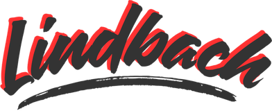
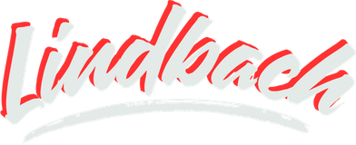

ÅRSHJUL
Planlegg året som en sirkel. Legg inn oppgaver på uker, kryss av når de er gjort, og ta med faste oppgaver til neste år.
Årshjul enkel
For deg som planlegger alene. Sikkerhetskopi til fil.
Årshjul team
For flere som deler årshjul. Eksport og import med sammenslåing.
Oppgavene lagres bare i din egen nettleser. Ingenting sendes til andre. Ta sikkerhetskopi av og til under Innstillinger.